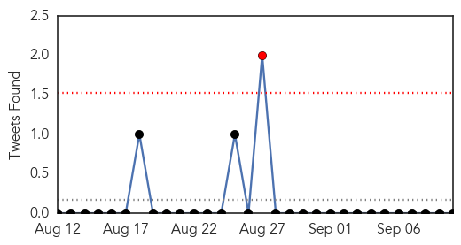
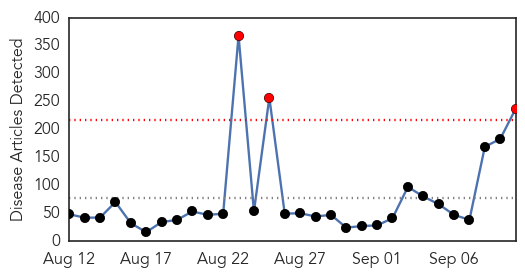
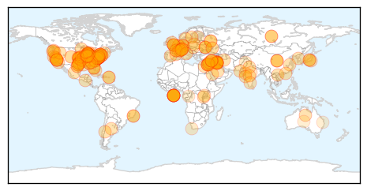

Influenza
30-Day Web Trend
3 alerts, 0 warnings

30-Day Twitter Trend
1 alerts, 0 warnings

Article Locations

Article Confidences

Top Articles:
- 0.999
- 5 Bogus Excuses People Use to Avoid the Flu Vaccine
- 0.997
- Enterovirus EV-D68: All About The Respiratory Illness Affecting Hundreds Of US Children
- 0.997
- NJ preparing for virus that is sickening Midwest
- 0.996
- The Daily News of Newburyport: News
- 0.996
- What You Need to Know about Virus Sweeping the Midwest
- 0.990
- States prepping for virus sickening Midwest
- 0.987
- Local health officials on lookout for virus that makes children severely ill
- 0.980
- News Scan for Sep 10, 2014
- 0.967
- Colorado among 10 states asking CDC for help with enterovirus 68
- 0.961
- Uncommon respiratory virus may have hit Buffalo-area children
- 0.919
- Texas, Lubbock likely still enterovirus D68-free
- 0.799
- County health officials get ready to start administering flu vaccines
- 0.798
- Sniffles common in Utah due to respiratory virus outbreak
- 0.757
- Rare respiratory virus spreading to kids across country
- 0.664
- Australian Museum Eureka Prizes: Hendra virus vaccine and helicopter 'floaties' take out top gongs
- 0.589
- Gastroenteritis Strikes Passengers on Sea Princess : Cruise Law News
Top Tweets:
-
No tweets found for Sep 10, 2014
Unknown
30-Day Web Trend
3 alerts, 0 warnings

30-Day Twitter Trend
0 alerts, 0 warnings

Article Locations
Article Confidences
Top Articles:
- 0.998
- Virus striking other Midwest states likely boosting local hospital stays
- 0.995
- How providers can help limit the enterovirus 68 outbreak
- 0.994
- Serious respiratory illness hits hundreds of kids in 10 states
- 0.992
- Muskegon hospital officials, county health department reporting respiratory illnesses possibly linked to Enterovirus 68
- 0.992
- 6 cases of enterovirus 68 reported at USA Children's & Women's Hospital; officials treating large numbers of patients in respiratory distress
- 0.990
- Ross County child tested for respiratory virus
- 0.988
- 10 states report enterovirus outbreak in kids
- 0.988
- Has rare enterovirus strain arrived in Georgia?
- 0.985
- Loyola Medical Center restricts visitors amid virus outbreak
- 0.984
- Enterovirus outbreak expected to spread nationwide
- 0.981
- Enterovirus infections difficult to track
- 0.975
- How Your Hospital Staff Can Prepare for the EV-D68 Virus Affecting Children
- 0.974
- As Rare Virus Spreads Across U.S., Health Officials Urge Doctors To Be On The Lookout « CBS Philly
- 0.970
- What about enterovirus D68 and Michigan? Here are 9 takeaways
- 0.969
- Has rare enterovirus strain arrived in Georgia?
- 0.967
- Health officials concerned rare virus infecting Georgia children
- 0.966
- Official: Enterovirus no 'cause for concern' in California for now
- 0.965
- Prevention urged to slow spread of enterovirus
- 0.963
- Health officials expect enterovirus D-68 to hit Arkansas
- 0.957
- Pa. prepares for virus that has stricken children in nearby states
- 0.948
- Rare respiratory virus infects ‘clusters’ of US kids
- 0.930
- Enterovirus D68 spreads in midwest United States
- 0.927
- Rady on alert for virus causing Midwest epidemic
- 0.917
- Chicago Tribune
- 0.917
- Chicago Tribune
- 0.917
- Chicago Tribune
- 0.917
- Chicago Tribune
- 0.917
- Chicago Tribune
- 0.917
- Chicago Tribune
- 0.917
- Chicago Tribune
- 0.917
- Chicago Tribune
- 0.917
- Chicago Tribune
- 0.917
- Chicago Tribune
- 0.917
- Chicago Tribune
- 0.917
- Chicago Tribune
- 0.917
- Chicago Tribune
- 0.917
- Chicago Tribune
- 0.917
- Chicago Tribune
- 0.917
- Chicago Tribune
- 0.917
- Chicago Tribune
- 0.917
- Chicago Tribune
- 0.917
- Chicago Tribune
- 0.917
- Chicago Tribune
- 0.917
- Chicago Tribune
- 0.917
- Chicago Tribune
- 0.917
- Chicago Tribune
- 0.917
- Chicago Tribune
- 0.917
- Chicago Tribune
- 0.917
- Chicago Tribune
- 0.917
- Chicago Tribune
Showing top 50 articles...
Top Tweets:
- 0.725
- Morning Sunshines! üåªüçÉ a ley de 4 mints para que comienze la clase y en el tapon üí™ es un talento
- 0.590
- Although the flu and common cold have similar symptoms, the flu tends to be more severe. Know the symptoms: http://t.co/KwoAd1FP1W